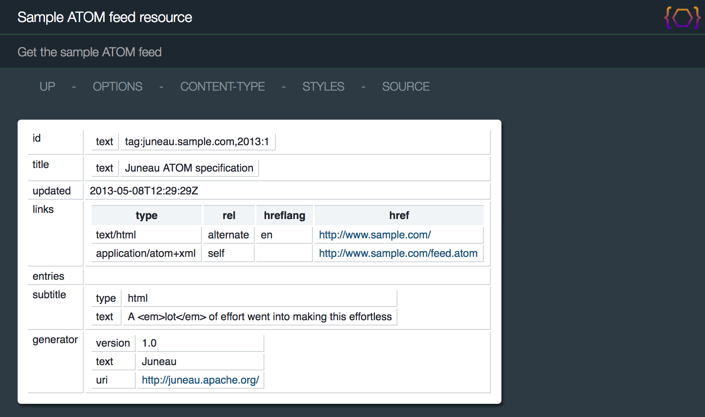

AtomFeedResource
The AtomFeedResource class shows examples of the following:
Pointing a browser to the resource shows the following:
http://localhost:10000/atom

True ATOM feeds require using an Accept:text/xml header:
http://localhost:10000/atom?Accept=text/xml&plainText=true

Other languages, such as JSON are also supported:
http://localhost:10000/atom?Accept=text/json&plainText=true

/**
* Sample resource that shows how to generate ATOM feeds.
*/
@RestResource(
path="/atom",
title="Sample ATOM feed resource",
description="Sample resource that shows how to render ATOM feeds",
htmldoc=@HtmlDoc(
widgets={
ContentTypeMenuItem.class,
StyleMenuItem.class
},
navlinks={
"up: request:/..",
"options: servlet:/?method=OPTIONS",
"$W{ContentTypeMenuItem}",
"$W{StyleMenuItem}",
"source: $C{Source/gitHub}/org/apache/juneau/examples/rest/$R{servletClassSimple}.java"
}
),
properties={
@Property(name=SERIALIZER_quoteChar, value="'"),
@Property(name=RDF_rdfxml_tab, value="5"),
@Property(name=RDF_addRootProperty, value="true")
},
encoders=GzipEncoder.class
)
public class AtomFeedResource extends BasicRestServletJena {
private Feed feed; // The root resource object
@Override /* Servlet */
public void init() {
try {
feed =
feed("tag:juneau.sample.com,2013:1", "Juneau ATOM specification", "2013-05-08T12:29:29Z")
.subtitle(text("html").text("A <em>lot</em> of effort went into making this effortless"))
.links(
link("alternate", "text/html", "http://www.sample.com/").hreflang("en"),
link("self", "application/atom+xml", "http://www.sample.com/feed.atom")
)
.generator(
generator("Juneau").uri("http://juneau.apache.org/").version("1.0")
)
.entries(
entry("tag:juneau.sample.com,2013:1.2345", "Juneau ATOM specification snapshot", "2013-05-08T12:29:29Z")
.links(
link("alternate", "text/html", "http://www.sample.com/2012/05/08/juneau.atom"),
link("enclosure", "audio/mpeg", "http://www.sample.com/audio/juneau_podcast.mp3").length(1337)
)
.published("2013-05-08T12:29:29Z")
.authors(
person("James Bognar").uri(new URI("http://www.sample.com/")).email("jamesbognar@apache.org")
)
.contributors(
person("Barry M. Caceres")
)
.content(
content("xhtml")
.lang("en")
.base("http://www.apache.org/")
.text("<div><p>[Update: Juneau supports ATOM.]</p></div>")
)
);
} catch (Exception e) {
throw new RuntimeException(e);
}
}
/**
* GET request handler
*/
@RestMethod(name=GET, path="/")
public Feed getFeed() throws Exception {
return feed;
}
/**
* PUT request handler.
* Replaces the feed with the specified content, and then mirrors it as the response.
*/
@RestMethod(name=PUT, path="/")
public Feed setFeed(@Body Feed feed) throws Exception {
this.feed = feed;
return feed;
}
}